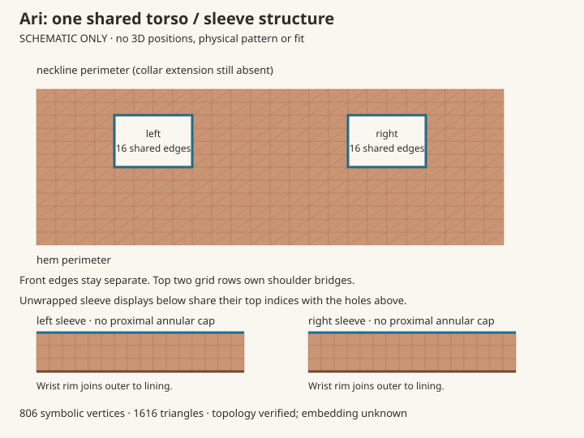
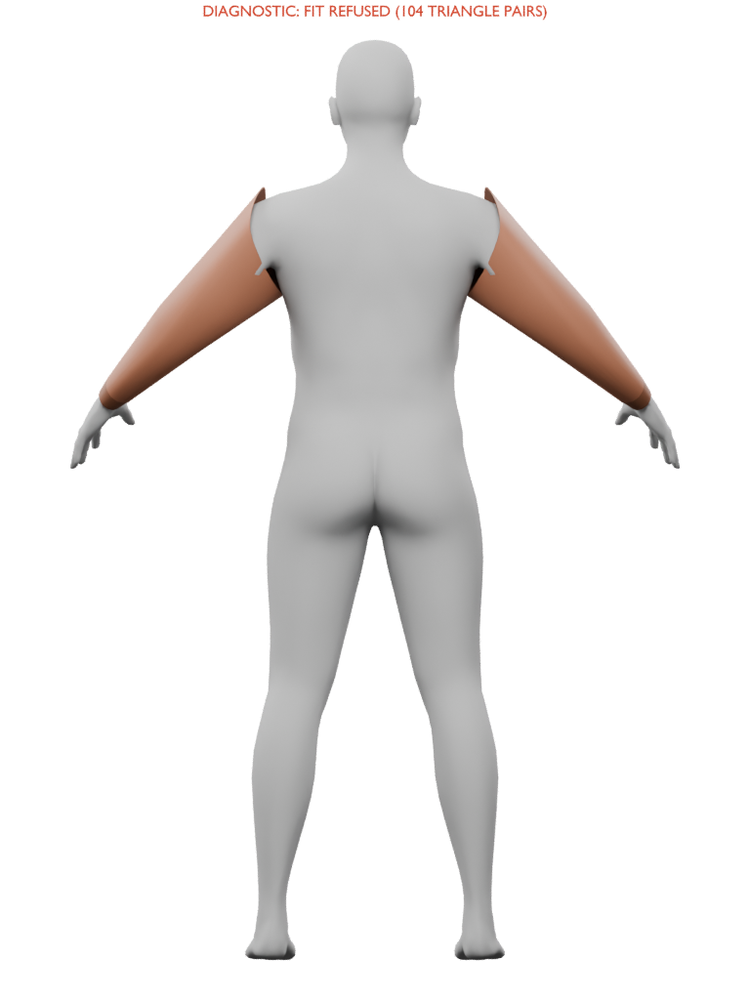

The original torso and sleeves now share their armhole indices, including the lining. The open front remains separate. This is an executable symbolic topology blueprint; no world positions or new garment fit have been generated.

Every pair below is outer / lining. The same IDs belong to torso and sleeve, rather than two capped objects placed together.
| Side | Outer / lining shared vertices (16 per side) |
|---|---|
| left | 154 / 557 · 179 / 582 · 198 / 601 · 217 / 620 · 236 / 639 · 256 / 659 · 258 / 661 · 260 / 663 · 238 / 641 · 219 / 622 · 200 / 603 · 181 / 584 · 158 / 561 · 157 / 560 · 156 / 559 · 155 / 558 |
| right | 166 / 569 · 188 / 591 · 207 / 610 · 226 / 629 · 245 / 648 · 271 / 674 · 273 / 676 · 275 / 678 · 247 / 650 · 228 / 631 · 209 / 612 · 190 / 593 · 170 / 573 · 169 / 572 · 168 / 571 · 167 / 570 |
The earlier sleeve draft is retained with its 104 strict crossing triangle-pair refusal and raised proximal rims. This new architecture does not cure those contacts or establish a valid 3D embedding.

Executable connectivity JSON · Exact receipt · Independent root proof · Original bomber art
Next: a fresh global 3D authoring contract must own shoulder/axilla coordinates, lining separation, front exposure and whole-body contact/coverage assumptions. Fit, appearance, rig/morph/motion and complete Ari remain open.